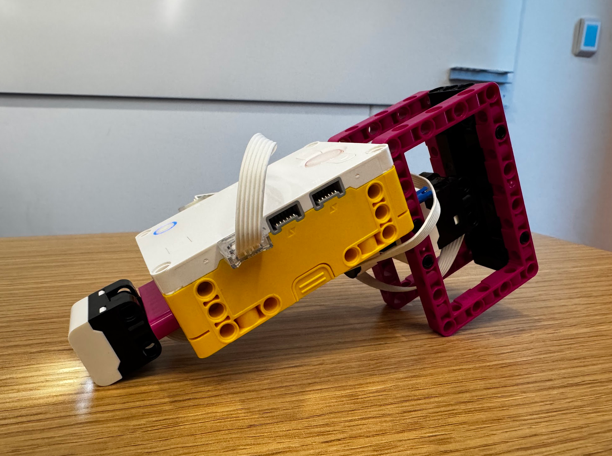

This fruit scanner was made in collaboration with my peer Khang Ngo. I wanted the design to be ergonomic, so I gave it a handle with a trigger that starts a color-sensor reading.
The scanner first records five apple samples and then five banana samples. When it scans a new piece of fruit, the program compares its red, green, and blue sensor values with the saved samples and uses the nearest sample to classify it. The power-button light shows red for an apple and yellow for a banana.
The force sensor in the handle acts as the trigger on port A, and the color sensor is connected to port B.
# Setup: Force Sensor on port A; Color Sensor on port B.
# The power-button light shows red for apple and yellow for banana.
from hub import port, light
import runloop
import color
import color_sensor
import force_sensor
SAMPLES_PER_FRUIT = 5
async def main():
# Collect five apple samples.
sample_colors = []
sample_labels = []
print("Scan five apples. Press the Force Sensor once per apple.")
while len(sample_labels) < SAMPLES_PER_FRUIT:
# Wait for a press on the Force Sensor in port A.
while not force_sensor.pressed(port.A):
await runloop.sleep_ms(10)
# Read the Color Sensor in port B and save the apple sample.
apple_rgb = color_sensor.rgbi(port.B)
sample_colors.append(apple_rgb)
sample_labels.append("apple")
print("Apple sample saved:", apple_rgb)
# Wait for the Force Sensor to be released before the next scan.
while force_sensor.pressed(port.A):
await runloop.sleep_ms(10)
# Collect five banana samples.
print("Now scan five bananas. Press the Force Sensor once per banana.")
while len(sample_labels) < SAMPLES_PER_FRUIT * 2:
# Wait for a press on the Force Sensor in port A.
while not force_sensor.pressed(port.A):
await runloop.sleep_ms(10)
# Read the Color Sensor in port B and save the banana sample.
banana_rgb = color_sensor.rgbi(port.B)
sample_colors.append(banana_rgb)
sample_labels.append("banana")
print("Banana sample saved:", banana_rgb)
# Wait for the Force Sensor to be released before the next scan.
while force_sensor.pressed(port.A):
await runloop.sleep_ms(10)
# Classify new fruit scans.
print("Training complete. Press the Force Sensor to scan fruit.")
while True:
# Wait for a press to scan the next object.
while not force_sensor.pressed(port.A):
await runloop.sleep_ms(10)
# Read the new object's red, green, and blue values.
new_rgb = color_sensor.rgbi(port.B)
# Start by treating the first saved sample as the closest.
closest_index = 0
red_difference = new_rgb[0] - sample_colors[0][0]
green_difference = new_rgb[1] - sample_colors[0][1]
blue_difference = new_rgb[2] - sample_colors[0][2]
smallest_difference = (
red_difference * red_difference
+ green_difference * green_difference
+ blue_difference * blue_difference
)
# Compare the new reading with every other saved sample.
for sample_index in range(1, len(sample_colors)):
red_difference = new_rgb[0] - sample_colors[sample_index][0]
green_difference = new_rgb[1] - sample_colors[sample_index][1]
blue_difference = new_rgb[2] - sample_colors[sample_index][2]
difference = (
red_difference * red_difference
+ green_difference * green_difference
+ blue_difference * blue_difference
)
if difference < smallest_difference:
smallest_difference = difference
closest_index = sample_index
# Set the power-button light to the nearest sample's fruit color.
if sample_labels[closest_index] == "apple":
print("Apple")
light.color(light.POWER, color.RED)
else:
print("Banana")
light.color(light.POWER, color.YELLOW)
# Wait for release so one press does not scan repeatedly.
while force_sensor.pressed(port.A):
await runloop.sleep_ms(10)
runloop.run(main())